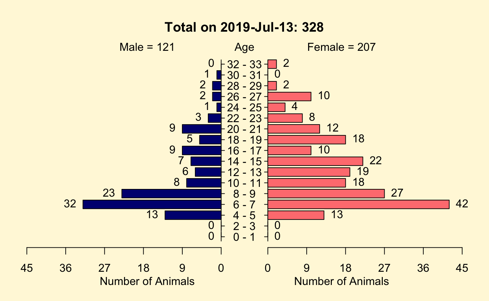
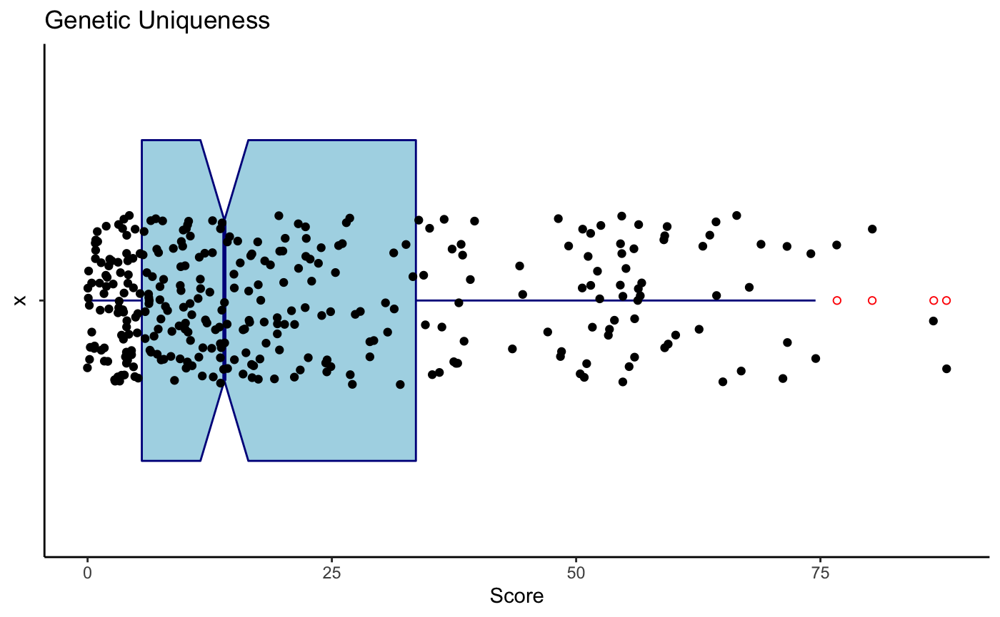

vignettes/interactive_use_tutorial_files/interactive_use_tutorial.Rmd
interactive_use_tutorial.RmdThis tutorial demonstrates the major functions used within the Shiny application provided by the nprcmanager package and provides sufficient insight into those functions that they may be used independently.
You can install nprcmanager from github with:
All missing dependencies should be automatically installed.
You can get help from the R console with
The help provided by this (nprcmanager.R) needs to be more complete and include links to the tutorials.
Pedigrees can be imported using either Excel worksheets or text files that contain all of the pedigree information or using either Excel worksheets or text files that contain a list of focal animals with the remainder of the pedigree information is pulled in through the LabKey API.
This tutorial will use a pedigree file that can be created using the makeExamplePedigreeFile function as shown below. The function makeExamplePedigreeFile both saves a file and returns the full path name to the saved file, which we are saving into the variable pedigreeFile. Note: the user will select where to store the file.
This writes ExamplePedigree.csv to a place you select within your file system.
You use the file name provided by the makeExamplePedigreeFile function to tell read.table what file to read.
Note the number of rows read. Each row represents an individual within the pedigree.
## [1] 3694The next step is to put the information read from the file into a pedigree object. This is done with the qcStudbook function, which examines the file contents and tests for common pedigree errors.
You can see the errors that can be detected by qcStudbook by returning the empty error list with getEmptyErrorLst(). We are not showing the output of the function call now because later in this tutorial we will explore errors in more depth.
qcStudbook can take four arguments sb, minParentAge (in years), reportChanges, and reportErrors. However, all but sb have default values and only the sb argument is required.
It is prudent to ensure that parents are at least of breeding age, which is species specific. I have used a minParentAge of 2 years.1
Running the line of code below will create a warning if you do not have the nprcmanager configuration file in place. This file is only needed when the LabKey API is to be used. It is not required for this tutorial.
If qcStudbook reports an error, change the call by adding the reportErrors argument set to TRUE and examine the returned object. More on this is presented in the Pedigree Errors section.
You may want to focus your work on a focal group of animals. This can be done by reading in a list of animal IDs that make up the focal group and use that list to update the pedigree. Alternatively you can created a list of animal IDs based on criteria you have selected.
For example, to select living animals at the facility with at least one parent, the following can be used.
focalAnimals <- breederPed$id[!(is.na(breederPed$sire) & is.na(breederPed$dam)) &
is.na(breederPed$exit)]
print(stri_c("There are ", length(focalAnimals), " animals in the vector _focalAnimals_."))[1] “There are 327 animals in the vector focalAnimals.”
As can be seen, these animals have at least one parent and have not left the facility.
## id sire dam exit
## 1669 01QRQ4 VDBGDP TH7HTY <NA>
## 1743 CLSVU6 ULV9M7 SUFWJI <NA>
## 1887 1SPLS8 U9APLW 142GKP <NA>
## 1934 5IAFMK U4YSS5 WVE6Y4 <NA>
## 2072 HLQ9SY UI3RFL VEWC1E <NA>
## 2234 XFWVVX U3MFSZ L4LM1F <NA>
## 2337 6X6BG9 ENI6HX IUF0HC <NA>
## 2377 B228Q6 UEUIRJ CBSIAA <NA>
## 2378 B2CKHA ENI6HX WBFBR5 <NA>
## 2383 BCJJKN UA379T JPVAT3 <NA>We indicate that these are the animals of interest by using the setPopulation function. This function simply sets a column named population2 to the logical value of TRUE if the row represents an animal in the list and FALSE otherwise.
The first line of code below sets the population column and the second counts the number of rows where the value was set to TRUE.
breederPed <- setPopulation(ped = breederPed, ids = focalAnimals)
nrow(breederPed[breederPed$population, ])## [1] 327The IDs used to populate the population flag can be used to trim the pedigree so that it contains only those individuals who are in the ID list or are ancestors of those individuals.
## [1] 3694## [1] 704The trimPedigree function has the ability to remove those ancestors that do not contribute genetic information. Uninformative founders are those individuals who are parents of only one individual and who have no parental information. (Currently genotypic information is ignored by trimPedigree).
trimmedPedInformative <- trimPedigree(focalAnimals, breederPed,
removeUninformative = TRUE)
nrow(trimmedPedInformative)## [1] 509We can find all of the animals that are in the trimmed pedigree but are not focal animals.
nonfocalInTrimmedPed <- trimmedPed$id[!trimmedPed$id %in% focalAnimals]
length(nonfocalInTrimmedPed)## [1] 377We can see which of these 377 are and are not parents. We will first make sure we have all of the parents by getting our list of parents from the entire pedigree. We then demonstrate that they are all in the trimmed pedigree.
allFocalParents <- c(breederPed$sire[breederPed$id %in% focalAnimals],
breederPed$dam[breederPed$id %in% focalAnimals])
trimmedFocalParents <- c(trimmedPed$sire[trimmedPed$id %in% focalAnimals],
trimmedPed$dam[trimmedPed$id %in% focalAnimals])
all.equal(allFocalParents, trimmedFocalParents)## [1] TRUEHowever, not all of the animals in the trimmed pedigree are either the focal animals or their parents.
notFocalNotParent <- trimmedPed$id[!trimmedPed$id %in% c(focalAnimals, allFocalParents)]
length(notFocalNotParent)## [1] 187Since the trimming process is supposed to retain the focal animals and their ancestors, we will leave it as an exercise for you to demonstrate that at least some of the remaining animals are grandparents of the focal animals. Hint: there are 490 grandparents in both the trimmed and the complete pedigree.
As you can see from the number of rows in the full pedigree (3694) versus the trimmed pedigree (704), trimmed pedigrees can be much smaller. Of the additional 377 animals, 182 provide genetic information while the others (195) are genetically uninformative.
As is shown below only 4 (0ZX29Q, 1QBKW9, 5PWJ0G, and Y3CJ5A) living animals are still in the colony but are not in the trimmed pedigree.3
unknownBirth <- breederPed$id[is.na(breederPed$birth)]
knownExit <- breederPed$id[ !is.na(breederPed$exit)]
unknownBirthKnownExit <- breederPed$id[is.na(breederPed$birth) | !is.na(breederPed$exit)]
knownPed <- breederPed[!breederPed$id %in% unknownBirthKnownExit, ]
otherIds <- knownPed$id[!knownPed$id %in% trimmedPed$id[is.na(trimmedPed$exit)]]
print(stri_c("The living animal in the pedigree that are not in the trimmed ",
"pedigree are ", get_and_or_list(otherIds), "."))[1] “The living animal in the pedigree that are not in the trimmed pedigree are 0ZX29Q, 1QBKW9, 5PWJ0G, and Y3CJ5A.”
You can examine the population structure using an age-sex pyramid plot with a single function. We will limit our view to just the focal animals and their living relatives. This is appropriate for colony management because in addition to the genetic diversity we seek, we have to remain cognacent of the age and sex distributions within the colonies we manage.

Your genetic value analysis must be carefully performed. The next three commands set up the entire pedigree for analysis. The first of these three commands set all of the pedigree members to be part of the population of interest by setting the population column to TRUE for all individuals. Note that a new pedigree object (ped) is being created.
probands <- ped$id[ped$population]
ped <- trimPedigree(probands, ped, removeUninformative = FALSE,
addBackParents = FALSE)
## Need a brief discussion of iterations (guIter), threshold (guThresh),
## and byID.
geneticValue <- reportGV(ped, guIter = 500,
guThresh = 3,
byID = TRUE,
updateProgress = NULL)
summary(geneticValue)## The genetic value report
## Individuals in Pedigree: 3694
## Male Founders: 141
## Female Founders: 122
## Total Founders: 263
## Founder Equivalents: 241.84
## Founder Genome Equivalents: 163.8
## Live Offspring: 4052
## High Value Individuals: 2961
## Low Value Individuals: 733What happens if we limit our analysis to the trimmed pedigree? Remember that the trimmed pedigree still contains all of the genetic information that the full pedigree has for the focal animals.
trimmedGeneticValue <- reportGV(trimmedPed, guIter = 500,
guThresh = 3,
byID = TRUE,
updateProgress = NULL)
summary(trimmedGeneticValue)## The genetic value report
## Individuals in Pedigree: 327
## Male Founders: 3
## Female Founders: 17
## Total Founders: 20
## Founder Equivalents: 109.67
## Founder Genome Equivalents: 47.86
## Live Offspring: 321
## High Value Individuals: 233
## Low Value Individuals: 94It is clear that limiting your analysis to the animals of interest reduces the effort required to examine the animals of interest.
The names of the object within the genetic value report object (trimmedGeneticValue) can be listed as shown in the next line of code.
## [1] "report" "kinship" "gu" "fe"
## [5] "fg" "maleFounders" "femaleFounders" "total"The report object (an R dataframe) can in-turn be examined.
## [1] "id" "sex" "age"
## [4] "birth" "exit" "population"
## [7] "origin" "indivMeanKin" "zScores"
## [10] "gu" "totalOffspring" "livingOffspring"
## [13] "value" "rank"## [1] 327The report is more conveniently used as a separate object. The next section of code rounds some of the numerica values and converts all columns to characters for display as a table where only the first 10 lines are included.
rpt <- trimmedGeneticValue[["report"]]
rpt$indivMeanKin <- round(rpt$indivMeanKin, 5)
rpt$zScores <- round(rpt$zScores, 2)
rpt$gu <- round(rpt$gu, 5)
rpt <- toCharacter(rpt)
names(rpt) <- headerDisplayNames(names(rpt))
knitr::kable(rpt[1:10, ]) # needs more work for display purposes.| Ego ID | Sex | Age (in years) | Birth Date | Exit Date | Breeding Colony Member | Origin | Individual Mean Kinship | Z-score (Mean Kinship) | Genome Uniqueness (%) | Total Offspring | Living Offspring | Value Designation | Rank |
|---|---|---|---|---|---|---|---|---|---|---|---|---|---|
| CLSVU6 | F | 23.9 | 1995-08-02 | NA | TRUE | 0.00287 | -1.97 | 88.6 | 1 | 1 | High Value | 1 | |
| KZM9RB | M | 30.1 | 1989-05-03 | NA | TRUE | 0.00329 | -1.90 | 86.2 | 0 | 0 | High Value | 2 | |
| 1SPLS8 | F | 7.9 | 2011-07-26 | NA | TRUE | 0.00373 | -1.83 | 79.2 | 0 | 0 | High Value | 3 | |
| WK89I9 | F | 21.1 | 1998-05-26 | NA | TRUE | 0.00582 | -1.49 | 76.2 | 0 | 0 | High Value | 4 | |
| 01QRQ4 | F | 18.2 | 2001-04-04 | NA | TRUE | 0.00373 | -1.83 | 75.1 | 0 | 0 | High Value | 5 | |
| 8YP6PA | M | 5.0 | 2014-07-04 | NA | TRUE | 0.00485 | -1.65 | 74.2 | 0 | 0 | High Value | 6 | |
| IZDV8K | M | 7.7 | 2011-09-29 | NA | TRUE | 0.00480 | -1.66 | 73.2 | 0 | 0 | High Value | 7 | |
| 3MMZD4 | M | 12.2 | 2007-03-24 | NA | TRUE | 0.00536 | -1.57 | 72.4 | 0 | 0 | High Value | 8 | |
| CHK1ZX | F | 7.8 | 2011-09-06 | NA | TRUE | 0.00481 | -1.66 | 69.6 | 0 | 0 | High Value | 9 | |
| 50D77I | F | 20.1 | 1999-05-08 | NA | TRUE | 0.00451 | -1.71 | 68.2 | 0 | 0 | High Value | 10 |
We start the next lines of code by getting a fresh copy of the genetic value report since we changed all of the numeric values to characters in the last section to print the table. These lines demonstrate one way of extracting the component objects from the genetic value object.
rpt <- trimmedGeneticValue[["report"]]
kmat <- trimmedGeneticValue[["kinship"]]
f <- trimmedGeneticValue[["total"]]
mf <- trimmedGeneticValue[["maleFounders"]]
ff <- trimmedGeneticValue[["femaleFounders"]]
fe <- trimmedGeneticValue[["fe"]]
fg <- trimmedGeneticValue[["fg"]]It is informative to examine the distribution of genetic uniqueness, mean kinship, and z-scores (normalized mean kinship values).
Creation of the boxplot for the genetic uniqueness values is shown below.
gu <- rpt[, "gu"]
guBox <- ggplot(data.frame(gu = gu), aes(x = "", y = gu)) +
geom_boxplot(
color = "darkblue",
fill = "lightblue",
notch = TRUE,
outlier.color = "red",
outlier.shape = 1
) +
theme_classic() + geom_jitter(width = 0.2) + coord_flip() +
ylab("Score") + ggtitle("Genetic Uniqueness")
print(guBox)
Extraction of the individual mean kinship values and their corresponding z-scores is shown in the next code chunk.
Creation of boxplots for the mean kinship and z-scores is left as an exercise.
As stated earlier you can see which types of errors are detected by qcStudbook by looking at names returned by getEmptyErrorLst() as shown below.
## [1] "failedDatabaseConnection" "missingColumns"
## [3] "invalidDateRows" "suspiciousParents"
## [5] "femaleSires" "maleDams"
## [7] "sireAndDam" "duplicateIds"
## [9] "changedCols"Each is defined below.
| Error | Definition |
|---|---|
| failedDatabaseConnection | Database connection failed: configuration or permissions are invalid |
| missingColumns | Columns that must be within the pedigree file are missing. |
| invalidDateRows | Values, which are supposed to be dates, cannot be interpreted as a date. |
| suspiciousParents | Parents were too young on the date of birth of to have been the parent. |
| femaleSires | Individuals listed as female or hemaphroditic and as a sire. |
| maleDams | Individuals are listed as male and as a dam. |
| sireAndDam | Individuals who are listed as both a sire and a dam. |
| duplicateIds | IDs listed more than once. |
| changedCols | Columns that have been changed to conform to internal naming conventions and what they were changed to. |
In order to discuss pedigree error detection, we are going to use a very small imaginary pedigree listed below. Note the birth dates of ego_id o4 (2006-04-13) and the purported sire (2006-06-19). Obviously either a date or an ID is incorrect.
This is the pedigree.
## ego_id si re dam_id sex birth_date
## 1 s1 <NA> <NA> F 2000-07-18
## 2 d1 <NA> <NA> M 2003-04-13
## 3 s2 <NA> <NA> M 2006-06-19
## 4 d2 <NA> <NA> F 2015-09-16
## 5 o1 s1 d1 F 2015-02-04
## 6 o2 s1 d2 F 2009-03-17
## 7 o3 s2 d2 F 2012-04-11
## 8 o4 s2 d2 M 2006-04-13If we examine this pedigree file, we are going to get an error message. In additions since I do not have a valid database configuration file so we will get a warning about that.
pedOne <- nprcmanager::pedOne # put it in the local environment
summary(qcStudbook(pedOne, minParentAge = 0))## Error in qcStudbook(pedOne, minParentAge = 0): Parents with low age at birth of offspring are listed in ~/lowParentAge.csv.We can turn off this warning by telling qcStudbook not to expect a file ## Genetic Loops
To use the findLoops function run the following code and select a pedigree as your input file that has a loop in it. We are continuing to use the example pedigree that comes with the software Example_Pedigree.csv.
You can count how many loops you have with the following code.
## [1] 145## [1] 258You can list the first 10 sets of ids, sires and dams in loops with the following line of code:
## id sire dam
## 2519 V49H3Y UFI88T 9T7Y2Z
## 2572 61FUGE UDQ5WC GL88CF
## 2695 LWJ3A5 KZM9RB GCBYDW
## 2722 RNQU14 H2RDE2 DKIM6U
## 2752 L9M1DC 3PU50K WFQENR
## 2755 Q8U9LB 3PU50K CLSVU6
## 2905 FVJ14K UXC40T L5VC2M
## 2922 531HAC UMV4BE 5DIPZN
## 2924 85ESBB UQFY9C Q2RK1E
## 2941 0VLW56 6KPKH7 MMEHXVSetting the minParentAge to 3.5 and above will cause an error along with the creation of a file ~/lowParentAge.csv that will list the parents with low age at the birth of an offspring.↩
The population column is created and added to the pedigree object if it does not already exist.↩
All animals within the colony have a known birth date.↩